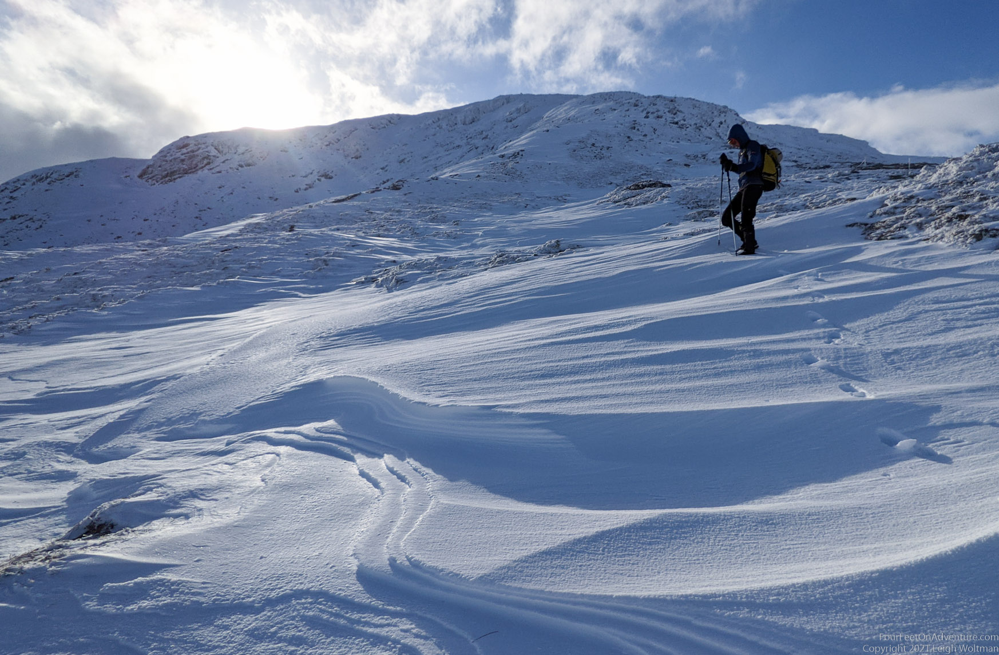
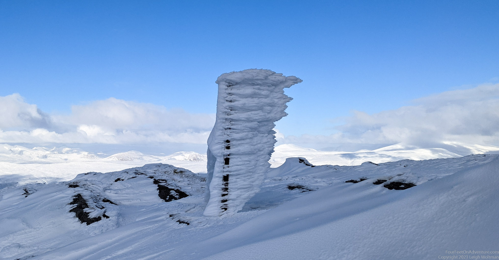
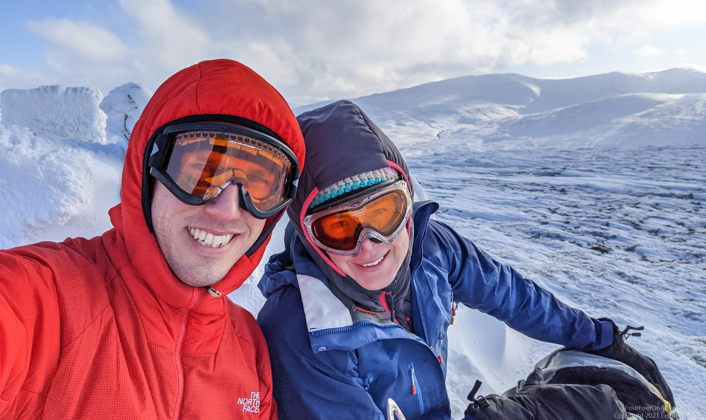

It is still snowy, and not only that, it’s the weekend. Although a bit windy, nothing we can’t handle. Minus twenty-two with the wind chill? Our Canadian training should be able to handle that.
Our destination is a little hill that would not be of any interest in the summer, but that works well with the avalanche conditions and because it has a bit of a road as approach; it may actually not be as bad of a wade through deep snow as other walks may be.
Lucky for us, some diggers have gone up the moor not too many days ago, so the trail we saw on the map is actually made a little solid by them. Some snow banks have swept over it, but it’s easy going.
Once on the steep bit it becomes easier, as the wind has blown most snow elsewhere. The top of the first hill is flat and requires some wading, though not too severe.

From there it's down to a saddle, and then up a ridge to the main top. We enjoy this, it’s always a surprise to see what lies around us behind what we couldn’t see. It never gets old.
Though it may not get old, it does get cold. While I put on new gloves that have no sweat in them and are the thickest pair I own, and enthusiastically starts photographing all kinds of beautiful snow structures, Leigh gets grumpier and more impatient every second, until we realize he is just really cold. I can’t help it though. The wind has been very strong, and settles against the wind to form the most amazing structures on poles and rocks. The wind during the last snow storm came from the right in this photo.

Leigh puts another layer on and we get going. He warms up quickly, and so does his mood. We decide to go straight down, and walk the road back to make it a loop. It’s fun going down, we are even able to bum slide some of it. The big question is, would it be time for new goggles???
